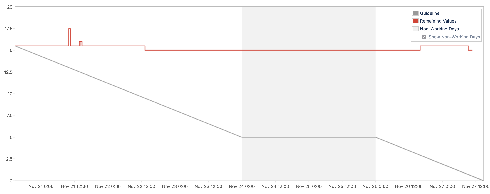
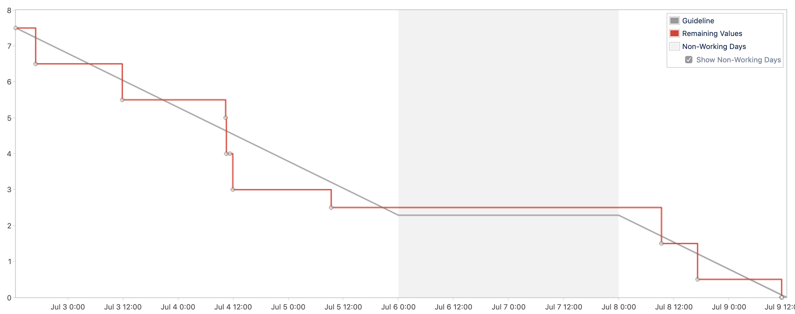

Debugging the Delivery of a Team (1/4)
Debugging the Delivery of a Team (1/4)
An articles series on troubleshooting a team struggling to ship.
Falling in line
Starting as a manager in a new team is a multi faced challenge. You need to understand many things, how to interact with the team members, what the team norms are, what their technical context here and many more. When talking about a small software team,
I feel that the most important one is getting in the team's cadence. By this I mean to get in the same rhythm of analysing/producing/shipping working software products, to look at work using the same time horizon. This allows you to frame milestones, challenges and problems in the right way. A team that ships weekly has a different outlook on future work than one that ships monthly!
Sometimes what happens is that you join a team where the cadence is just not there. You have all the ceremonies at the right time, you have iterations of constant length but the rhythm of delivery escapes you. It is because you are not regularly shipping working software.
This was exactly the situation me and my new team faced some months ago. A team set up in a quite normal way: some software engineers, a manager and a Product Owner, working using Scrum with 1 week sprints. An average team: working hard but struggling to ship, pouring ourselves in our daily work and have nothing to show for it.
And this is the story of how we troubleshoot the problem and, step by step, seen through the lens of burndown charts. The story of how we went from this

to this

In the next post we will see what was causing the flat line pattern that you see in the first image. Spoiler: it is not what you think it is ;)
Disclaimer
I know that burndown charts have a bad reputation and I don't want to suggest that they are the be-all end-all of team efficiency. I do think they are a useful metric that can be used to explore how much a team is able to focus and understands its own capacity.
This conotent is based on a previous article published on October 2, 2019.